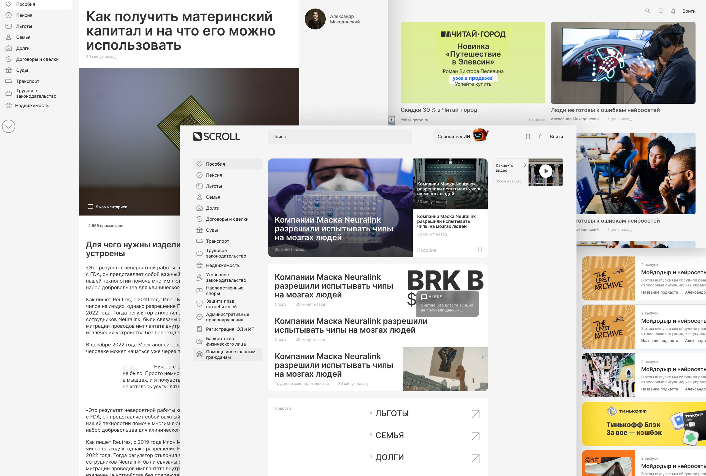
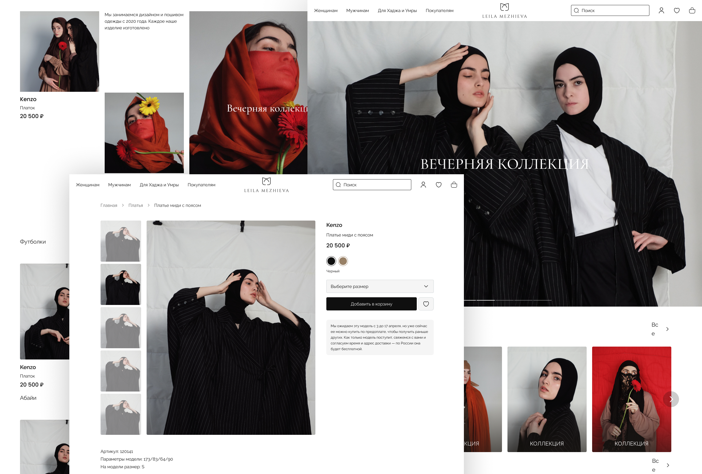
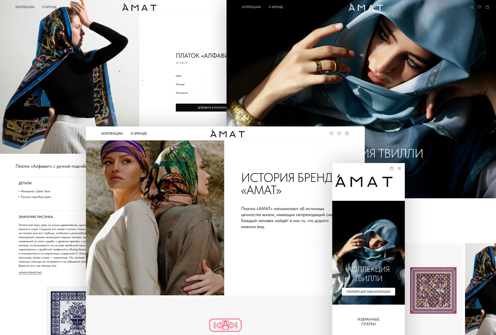
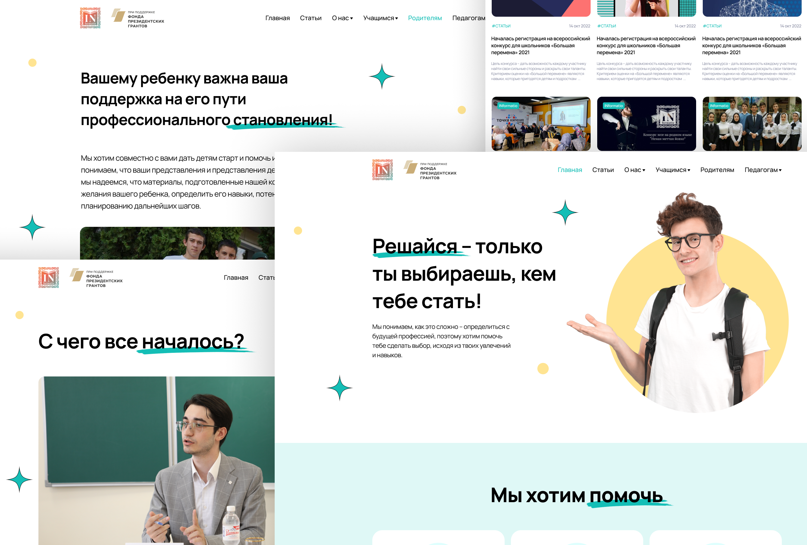
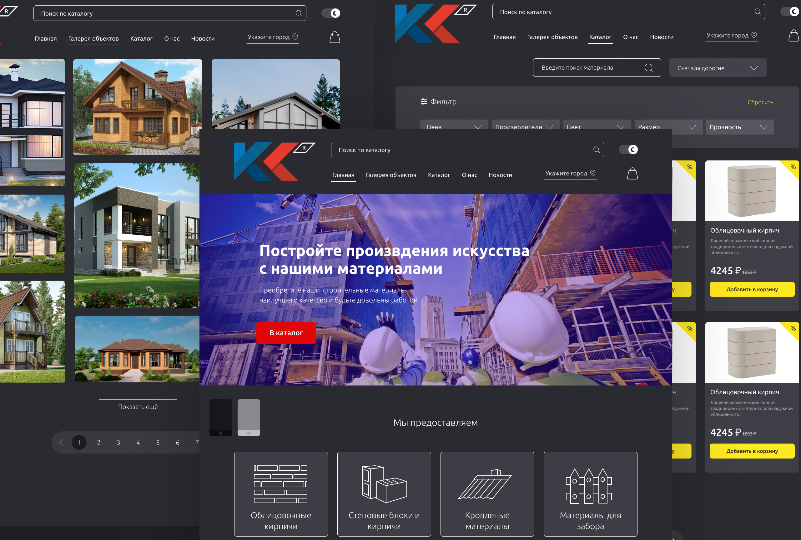
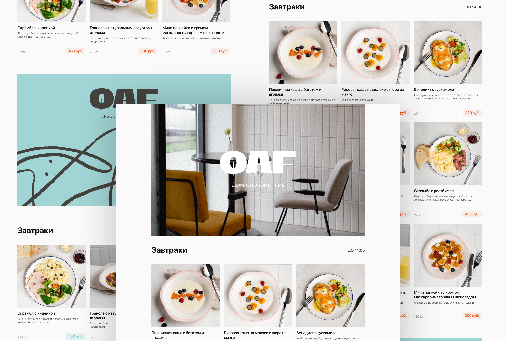

-

Новостной портал Scroll - новостной сайт с юридическим уклоном.
Stack: Next js, TypeScript, Redux Toolkit, Editor js
Проект реализован на Next js.
- Реализовала JWT-авторизацию.
- Инетегрировала текстовый редактор Editor js.
- Разработала кастомный аудио-плеер для прослушивания подкастов.
- Реализовала возможность лайкать и комментировать статьи.
- Добавила список избранных публикаций в ЛК.
- Оптимизировала производительность сайта - сделала точную настройку SSR и осуществила оптимизацию изображений и мультимедиа. -

Интернет магазин LeilaMezhieva
Stack: Next js, TypeScript, Redux Toolkit, react-hook-form
Здесь реализована JWT-авторизация для личного кабинета пользователя. Пользователь может на сайте оформить заказ, a для обработки данных с формы оформления заказа я использую библиотеки react-hook-form и react-input-mask. Для управления данными на сайте используется Redux Toolkit. Проект разработан на Next.js. -

Интернет магазин AMAT
Stack: HTML, SCSS, JavaScript, Swiper js
- Сверстала все страницы по макету в figma
- Реализовала анимации при открытии сайта, при прокрутке страницы
- Использовала библиотеку Swiper для реализации слайдеров на странице для просмотра различных товаров
- Разработала кастомные слайдеры с помощью CSS и JavaScript
- Реализовала навигацию по этапам оформления заказа с переходом на предыдущие шаги для редактирования данных
- Сделала валидацию полей для оформления заказа -

IN-formatio
Stack: HTML, SCSS, JavaScript
Платформа для Профориентационного проекта «Специалист выпускнику» -

Строймаркет - Сайт для магазина строительных материалов.
Stack: Next js, TypeScript, Redux Toolkit, swiper
Сайт для магазина строительных материалов. На сайте отображены товары из базы клиента. Реализованы различные фильтры и сортировка при просмотре товаров. Добавлена форма обратной связи. Отображена вся необходимая информация о товаре. -

Меню для ресторана QAF
Stack: HTML, SCSS, JavaScript, Gulp
По макету в figma свертала одностраничный сайт с переходами между разделами меню в мобильной версии. Решила проблему с оптимизацией изображений.
Пет проекты
-
Messenger (Разработан на курсе от Yandex Practicum)
Stack: HTML, SCSS, TypeScript, Handlebars -
Интернет магазин
Stack: React, TypeScript, Redux Toolkit -
News site Frontend
-
News site Backend
- Новостной сайт
Stack: React, TypeScript, Redux Toolkit, Express js, MongoDB, mongoose, jsonwebtoken, nodemon -
Сайт портфолио
Stack: React, TypeScript, styled-components